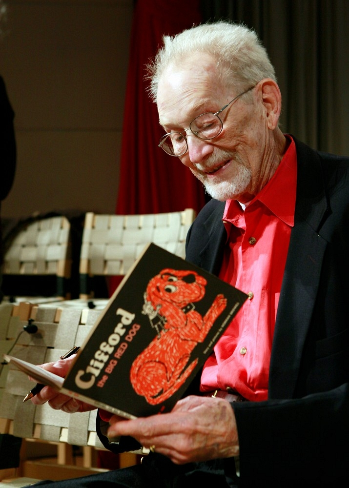
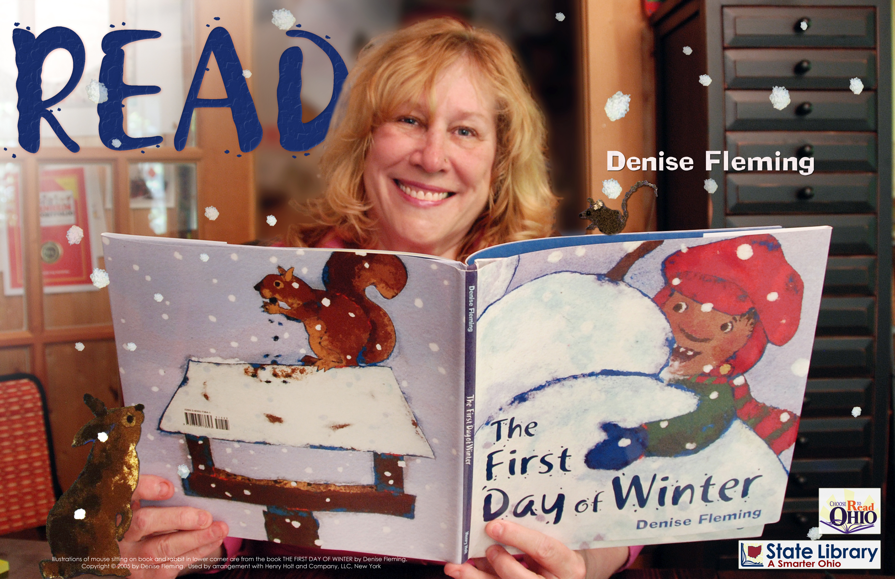

Cherie Bennett
Cherie Bennett, who has been writing since she was eleven, is the author of novels, plays, screenplays, plus a weekly syndicated newspaper advice column "HEY CHERIE!" Born in Buffalo, NY and raised in Michigan, Bennett moved to New York City after graduating from the University of Michigan.. Her goal at the time? To become a singer and actor! Bennett now lives in Nashville, TN, with her stage producer husband Jeff Gottesfeld.
Norman Bridwell

Growing up in Kokomo, Indiana, Norman Bridwell was always drawing. "I was not good at sports and my high school shop teacher, after a few days of class, took my tools away, telling me 'Here's a pad of paper instead. You seem to like to draw: stick to that,'" Bridwell remembers. But not everyone believed his drawings or writing would someday delight millions of children (and parents and teachers) around the world, a point he likes to stress when he visits schools, something which he does frequently. "I always liked to draw," Bridwell tells children, "but I was never considered very good. In school there was always someone better than me; the art teacher always liked their work better than mine. Teachers didn't like my writing either."
After high school, Bridwell wanted to turn his love of drawing into a career.He studied first at the John Herron Art Institute in Indianapolis and then moved to New York, where he took classes at another art school, Cooper Union, for two years. He then went to work as a commercial artist. It was in 1962 while he was working as a freelance filmstrip and slide illustrator and drawing mostly cartoons that Bridwell decided to put together a portfolio of colorful drawings and make the rounds of children's book publishers. Now married, with an infant daughter -- Emily -- he was hoping to supplement his income with some extra work illustrating books.
Nancy Farmer
Nancy Farmer has written three Newbery Honor Books: THE EAR THE EYE AND THE ARM; A GIRL NAMED DISASTER; and THE HOUSE OF THE SCORPION, which, in 2002, also won the National Book Award. Other books include DO YOU KNOW ME, THE WARM PLACE, and three picture books for young children. She grew up on the Arizona-Mexico border, and now lives with her family in Menlo Park, California.
Denise Fleming

Hi. My name is Denise Fleming. I love to write and draw children's books. I'm also very fond of cats!
Denise Fleming has published numerous picture books, including Time to Sleep and the Caldecott Honor Book In the Small Pond. Ms. Fleming creates the illustrations for her books by pouring colored cotton pulp through hand-cut stencils. The result--images set in hand-made paper. Ms. Fleming lives in Toledo, Ohio, with Gigi (Mama Cat) and Samson (Papa Cat); their kittens, Hissy, Sparky, Callie, and Mr. Darcy; Isabelle (who was there before all the others); and one dog, Warfy, who deserves a special mention because she has to live with seven cats. Ms. Fleming also has a husband and daughter.
Fun Facts About Me
- My Favorite Hobbies:
- My Favorite Summer Foods:
- My Favorite Exercise:
- My Pets:
Mike Lupica
Mike Lupica is one of the best-known and widely read sports columnists in the United States. He began his newspaper career with the New York Post in 1975, at the age of 23, covering the New York Knicks. In 1977, he became the youngest columnist ever at a New York paper with the Daily News, where he currently writes four syndicated columns a week. He has also worked for New York Newsday and The National. Since 1987, Lupica has written "The Sporting Life" column for Esquire magazine. His work has also appeared in Sport magazine, World Tennis, Tennis, Golf Digest, Sports Illustrated and Parade. Lupica is also a regular on ESPN's Sunday morning show, "The Sports Reporters."
Lupica has written or co-written several nonfiction books: REGGIE, the autobiography of Reggie Jackson (Villard, 1984); PARCELLS, an autobiography of former Giants and Patriots coach Bill Parcells (Bonus Books, 1987); WAIT 'TILL NEXT YEAR, co-written with novelist and screenwriter William Goldman (Bantam, 1988); SHOOTING FROM THE LIP, a collection of columns (Bonus Books, 1988); MAD AS HELL, exploring the divisive issues compromising professional sports (G.P. Putnam's Sons, 1996), SUMMER OF '98, a fresh look at the '98 season in baseball (G.P. Putnam's Sons, 1999); and BUMP AND RUN, a satire about the world of professional football (G.P. Putnam's Sons, 2000). In addition, he has written several novels: DEAD AIR, EXTRA CREDITS, LIMITED PARTNER, JUMP, and FULL COURT PRESS. DEAD AIR became the CBS television movie "Money, Power, Murder," for which Lupica also wrote the teleplay
If you need information on the Boston Public Library© use the link provided below.
Boston Public Library©If you need information on Mass transit use the link provided below.
Massachusetts Bay Transportation Authority (MBTA)Any questions or concerns can be brought to our attention by emailing the staff.
Email for event information